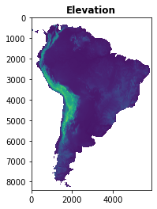
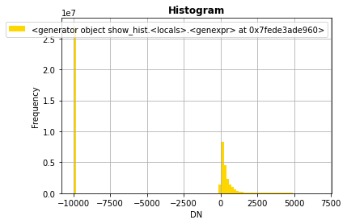
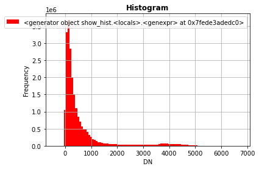
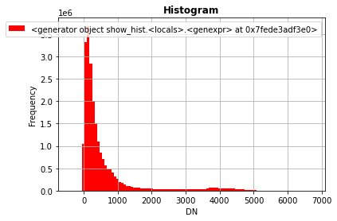
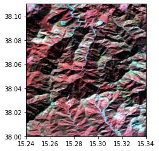
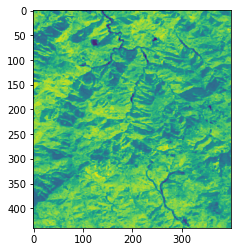
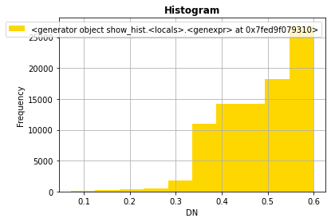
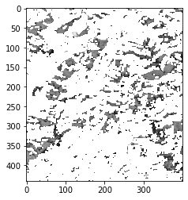
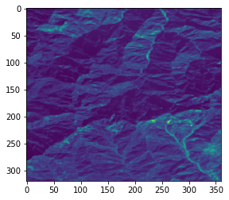

RasterIO
A brief intro to a pythonic raster library
In order to run this notebook, please do what follows:
cd /media/sf_LVM_shared/my_SE_data/exercise
jupyter-notebook RasterIO_Intro.ipynb
RasterIO is a library that simplifies the use of the raster swiss-knife geospatial library (GDAL) from Python (… and talking about that, how do you pronounce GDAL?).
Ratio: GDAL is C++ library with a public C interface for other languages bindings, therefore its Python API is quite rough from the mean Python programmer’s point of view (i.e. it is not pythonic enough). RasterIO is for rasters what Fiona is for vectors.
Note:`Open Source Approaches in Spatial Data Handling <https://link.springer.com/book/10.1007/978-3-540-74831-1>`__is a good comprehensive book about the history and roles of FOSS in the geospatial domain.
Rasterio basics
[2]:
import rasterio # that's to use it
[3]:
rasterio.__version__
[3]:
'1.3.2'
[38]:
dataset = rasterio.open('geodata/dem/SA_elevation_mn_GMTED2010_mn_msk.tif', mode='r') # r+ w w+ r
A lots of different parameters can be specified, including all GDAL valid open() attributes. Most of the parameters make sense in write mode to create a new raster file: * dtype * nodata * crs * width, height * transform * count * driver
More information are available in the API reference documentation here. Note that in some specific cases you will need to preceed a regular open() with rasterio.Env() to customize GDAL for your uses (e.g. caching, color tables, driver options, etc.).
Note that the filename in general can be any valid URL and even a dataset within some container file (e.g. a variable in Netcdf or HDF5 file). Even object storage (e.g AWS S3) and zip URLs can be considered.
Let’s see a series of simple methods that can be used to access metadata and pixel values
[39]:
dataset
[39]:
<open DatasetReader name='geodata/dem/SA_elevation_mn_GMTED2010_mn_msk.tif' mode='r'>
[40]:
dataset.name
[40]:
'geodata/dem/SA_elevation_mn_GMTED2010_mn_msk.tif'
[41]:
dataset.mode # read-only?
[41]:
'r'
[42]:
dataset.closed # bis still open? you gess what the meaning of dataset.close()
[42]:
False
[43]:
dataset.count
[43]:
1
[44]:
dataset.bounds
[44]:
BoundingBox(left=-83.0, bottom=-56.0, right=-34.0, top=14.0)
[45]:
dataset.transform
[45]:
Affine(0.008333333333333333, 0.0, -83.0,
0.0, -0.008333333333333333, 14.0)
[46]:
dataset.transform * (0,0)
[46]:
(-83.0, 14.0)
[47]:
dataset.transform * (dataset.width-1, dataset.height-1)
[47]:
(-34.00833333333333, -55.99166666666666)
[48]:
dataset.index(9.99975, 47.90025) # use geographical coords, by long and lat and gives (row,col)
[48]:
(-4069, 11159)
[49]:
dataset.xy(8399, 15999) # give geometric coords long and lat, by row and col !
[49]:
(50.32916666666665, -55.99583333333334)
[50]:
dataset.crs
[50]:
CRS.from_epsg(4326)
[51]:
dataset.shape
[51]:
(8400, 5880)
[52]:
dataset.meta
[52]:
{'driver': 'GTiff',
'dtype': 'int16',
'nodata': -9999.0,
'width': 5880,
'height': 8400,
'count': 1,
'crs': CRS.from_epsg(4326),
'transform': Affine(0.008333333333333333, 0.0, -83.0,
0.0, -0.008333333333333333, 14.0)}
[53]:
dataset.dtypes
[53]:
('int16',)
Raster bands can be loaded as a whole thanks to numpy
[54]:
dataset.indexes
[54]:
(1,)
[55]:
band = dataset.read(1) # loads the first band in a numpy array
[56]:
band
[56]:
array([[-9999, -9999, -9999, ..., -9999, -9999, -9999],
[-9999, -9999, -9999, ..., -9999, -9999, -9999],
[-9999, -9999, -9999, ..., -9999, -9999, -9999],
...,
[-9999, -9999, -9999, ..., -9999, -9999, -9999],
[-9999, -9999, -9999, ..., -9999, -9999, -9999],
[-9999, -9999, -9999, ..., -9999, -9999, -9999]], dtype=int16)
[57]:
band[0,0]
[57]:
-9999
[58]:
band[4440,1555] # access by row,col as a matrix
[58]:
1325
[59]:
dataset.width, dataset.height
[59]:
(5880, 8400)
[60]:
band[949,1549]
[60]:
95
Rasterio includes also some utility methods to show raster data, using matplotlib under the hood.
[61]:
import rasterio.plot
[67]:
rasterio.plot.show(band, title='Elevation')

[67]:
<AxesSubplot:title={'center':'Elevation'}>
[63]:
rasterio.plot.plotting_extent(dataset)
[63]:
(-83.0, -34.0, -56.0, 14.0)
[64]:
rasterio.plot.show_hist(band, bins=100)

Note that you need to explicity filter out nodata values at read time.
[65]:
band = dataset.read(masked=True)
band
[65]:
masked_array(
data=[[[--, --, --, ..., --, --, --],
[--, --, --, ..., --, --, --],
[--, --, --, ..., --, --, --],
...,
[--, --, --, ..., --, --, --],
[--, --, --, ..., --, --, --],
[--, --, --, ..., --, --, --]]],
mask=[[[ True, True, True, ..., True, True, True],
[ True, True, True, ..., True, True, True],
[ True, True, True, ..., True, True, True],
...,
[ True, True, True, ..., True, True, True],
[ True, True, True, ..., True, True, True],
[ True, True, True, ..., True, True, True]]],
fill_value=-9999,
dtype=int16)
[66]:
rasterio.plot.show_hist(band, bins=100)

The mask operation is also efection the plot layout.
[68]:
rasterio.plot.show(band, title='Elevation')

[68]:
<AxesSubplot:title={'center':'Elevation'}>
Alternatively (e.g. when raster missing nodata definition, which in practice happens quite often :-)) you need to explicitly mask on your own the input data.
[69]:
import numpy as np
band = dataset.read()
band_masked = np.ma.masked_array(band, mask=(band == -9999.0)) # mask whatever required
band_masked
rasterio.plot.show_hist(band_masked, bins=100)

The rasterio can package can also read directly multi-bands images.
[103]:
multi = rasterio.open('geodata/glad_ard/942_crop.tif', mode='r')
[71]:
m = multi.read()
m.shape
[71]:
(8, 440, 400)
Note that rasterio uses bands/rows/cols order in managing images, which is not the same of other packages!
[93]:
def pct_clip(array,pct=[2,98]):
array_min, array_max = np.nanpercentile(array,pct[0]), np.nanpercentile(array,pct[1])
clip = (array - array_min) / (array_max - array_min)
clip[clip>1]=1
clip[clip<0]=0
return clip
with rasterio.open("geodata/glad_ard/942_crop.tif") as src:
with rasterio.open(
'942_crop.tif', 'w+',
driver='GTiff',
dtype= rasterio.float32,
count=3,
crs = src.crs,
width=src.width,
height=src.height,
transform=src.transform,
) as dst:
V = pct_clip(src.read(4))
dst.write(V,1)
V = pct_clip(src.read(3))
dst.write(V,2)
V = pct_clip(src.read(2))
dst.write(V,3)
fig,ax=plt.subplots()
with rasterio.open("942_crop.tif") as src2:
rasterio.plot.show(src2.read(),transform=src2.transform,ax=ax)

1.2 An example of computation: NDVI
The real computation via numpy arrays
[105]:
multi_msk = multi.read(masked=True)
ndvi = (multi_msk[3]-multi_msk[2]) / (multi_msk[3]+multi_msk[2])
ndvi.min(), ndvi.max()
[105]:
(0.07209653092006033, 0.851783458062008)
[106]:
multi.shape
[106]:
(440, 400)
In order to write the result all metainfo must be prepared, the easiest way is by using the input ones.
[107]:
multi.profile
[107]:
{'driver': 'GTiff', 'dtype': 'uint16', 'nodata': None, 'width': 400, 'height': 440, 'count': 8, 'crs': CRS.from_epsg(4326), 'transform': Affine(0.00025, 0.0, 15.24,
0.0, -0.00025, 38.11), 'tiled': False, 'compress': 'deflate', 'interleave': 'pixel'}
[108]:
profile = multi.profile
profile.update(dtype=rasterio.float32, count=1, driver='GTiff')
profile
[108]:
{'driver': 'GTiff', 'dtype': 'float32', 'nodata': None, 'width': 400, 'height': 440, 'count': 1, 'crs': CRS.from_epsg(4326), 'transform': Affine(0.00025, 0.0, 15.24,
0.0, -0.00025, 38.11), 'tiled': False, 'compress': 'deflate', 'interleave': 'pixel'}
[109]:
with rasterio.open('geodata/glad_ard/942_crop_ndvi.tif', mode='w', **profile) as out:
out.write(ndvi.astype(rasterio.float32), 1)
[110]:
rasterio.plot.show(ndvi)

[110]:
<AxesSubplot:>
[111]:
import numpy as np
urb = np.ma.masked_array(ndvi, mask=(ndvi >= 0.6))
rasterio.plot.show_hist(urb)
rasterio.plot.show(urb,cmap='Greys')


[111]:
<AxesSubplot:>
[112]:
ndvi_stats = [ndvi.min(), ndvi.mean(), np.ma.median(ndvi), ndvi.max(), ndvi.std()]
ndvi_stats
[112]:
[0.07209653092006033,
0.579103729330517,
0.6012272128758722,
0.851783458062008,
0.11555229471805274]
[113]:
urb_stats = [urb.min(), urb.mean(), np.ma.median(urb), urb.max(), urb.std()]
urb_stats
[113]:
[0.07209653092006033,
0.48462524261699785,
0.49912903658046365,
0.5999793856936714,
0.08450404687909031]
It is possibile to use a vector model for masking in rasterio, let’s see how. First of all, we are creating a GeoJSON vector.
[137]:
%%bash
cat >/tmp/clip.json <<EOF
{
"type": "FeatureCollection",
"name": "clip",
"crs": { "type": "name", "properties": { "name": "urn:ogc:def:crs:EPSG::32119" } },
"features": [
{ "type": "Feature", "properties": { "id": null }, "geometry": { "type": "Polygon", "coordinates": [ [ [15.24, 38.09 ], [ 15.32, 38.09 ], [15.32, 38.00], [15.24, 38.00], [15.24, 38.09] ] ] } }
]
}
EOF
[138]:
! ogrinfo -al /tmp/clip.json
INFO: Open of `/tmp/clip.json'
using driver `GeoJSON' successful.
Layer name: clip
Geometry: Polygon
Feature Count: 1
Extent: (15.240000, 38.000000) - (15.320000, 38.090000)
Layer SRS WKT:
PROJCRS["NAD83 / North Carolina",
BASEGEOGCRS["NAD83",
DATUM["North American Datum 1983",
ELLIPSOID["GRS 1980",6378137,298.257222101,
LENGTHUNIT["metre",1]]],
PRIMEM["Greenwich",0,
ANGLEUNIT["degree",0.0174532925199433]],
ID["EPSG",4269]],
CONVERSION["SPCS83 North Carolina zone (meters)",
METHOD["Lambert Conic Conformal (2SP)",
ID["EPSG",9802]],
PARAMETER["Latitude of false origin",33.75,
ANGLEUNIT["degree",0.0174532925199433],
ID["EPSG",8821]],
PARAMETER["Longitude of false origin",-79,
ANGLEUNIT["degree",0.0174532925199433],
ID["EPSG",8822]],
PARAMETER["Latitude of 1st standard parallel",36.1666666666667,
ANGLEUNIT["degree",0.0174532925199433],
ID["EPSG",8823]],
PARAMETER["Latitude of 2nd standard parallel",34.3333333333333,
ANGLEUNIT["degree",0.0174532925199433],
ID["EPSG",8824]],
PARAMETER["Easting at false origin",609601.22,
LENGTHUNIT["metre",1],
ID["EPSG",8826]],
PARAMETER["Northing at false origin",0,
LENGTHUNIT["metre",1],
ID["EPSG",8827]]],
CS[Cartesian,2],
AXIS["easting (X)",east,
ORDER[1],
LENGTHUNIT["metre",1]],
AXIS["northing (Y)",north,
ORDER[2],
LENGTHUNIT["metre",1]],
USAGE[
SCOPE["Engineering survey, topographic mapping."],
AREA["United States (USA) - North Carolina - counties of Alamance; Alexander; Alleghany; Anson; Ashe; Avery; Beaufort; Bertie; Bladen; Brunswick; Buncombe; Burke; Cabarrus; Caldwell; Camden; Carteret; Caswell; Catawba; Chatham; Cherokee; Chowan; Clay; Cleveland; Columbus; Craven; Cumberland; Currituck; Dare; Davidson; Davie; Duplin; Durham; Edgecombe; Forsyth; Franklin; Gaston; Gates; Graham; Granville; Greene; Guilford; Halifax; Harnett; Haywood; Henderson; Hertford; Hoke; Hyde; Iredell; Jackson; Johnston; Jones; Lee; Lenoir; Lincoln; Macon; Madison; Martin; McDowell; Mecklenburg; Mitchell; Montgomery; Moore; Nash; New Hanover; Northampton; Onslow; Orange; Pamlico; Pasquotank; Pender; Perquimans; Person; Pitt; Polk; Randolph; Richmond; Robeson; Rockingham; Rowan; Rutherford; Sampson; Scotland; Stanly; Stokes; Surry; Swain; Transylvania; Tyrrell; Union; Vance; Wake; Warren; Washington; Watauga; Wayne; Wilkes; Wilson; Yadkin; Yancey."],
BBOX[33.83,-84.33,36.59,-75.38]],
ID["EPSG",32119]]
Data axis to CRS axis mapping: 1,2
id: String (0.0)
OGRFeature(clip):0
id (String) = (null)
POLYGON ((15.24 38.09,15.32 38.09,15.32 38.0,15.24 38.0,15.24 38.09))
[139]:
import rasterio.mask
import fiona
[140]:
with fiona.open('/tmp/clip.json', 'r') as geojson:
shapes = [feature['geometry'] for feature in geojson]
shapes
[140]:
[{'type': 'Polygon',
'coordinates': [[(15.24, 38.09),
(15.32, 38.09),
(15.32, 38.0),
(15.24, 38.0),
(15.24, 38.09)]]}]
[141]:
clip_image, clip_transform = rasterio.mask.mask(multi, shapes, crop=True) # why transform? ;-)
clip_image.shape
[141]:
(8, 360, 320)
[142]:
multi.meta
[142]:
{'driver': 'GTiff',
'dtype': 'uint16',
'nodata': None,
'width': 400,
'height': 440,
'count': 8,
'crs': CRS.from_epsg(4326),
'transform': Affine(0.00025, 0.0, 15.24,
0.0, -0.00025, 38.11)}
[143]:
profile = multi.meta
profile.update({'driver': 'GTiff',
'width': clip_image.shape[1],
'height': clip_image.shape[2],
'transform': clip_transform,
})
profile
[143]:
{'driver': 'GTiff',
'dtype': 'uint16',
'nodata': None,
'width': 360,
'height': 320,
'count': 8,
'crs': CRS.from_epsg(4326),
'transform': Affine(0.00025, 0.0, 15.24,
0.0, -0.00025, 38.089999999999996)}
[144]:
dst = rasterio.open('/tmp/clipped.tif', 'w+', **profile)
dst.write(clip_image)
[145]:
dst.shape
[145]:
(320, 360)
[146]:
rst = dst.read(masked=True)
rst.shape
[146]:
(8, 320, 360)
[147]:
rasterio.plot.show(rst[0])

[147]:
<AxesSubplot:>
Note that all read/write operation in RasterIO are performed for the whole size of the dataset, so the package is limited (somehow …) by memory available. An alternative is using windowing in read/write operation.
[148]:
import rasterio.windows
rasterio.windows.Window(0,10,100,100)
[148]:
Window(col_off=0, row_off=10, width=100, height=100)
[149]:
win = rasterio.windows.Window(0,10,100,100)
src = rasterio.open('/tmp/clipped.tif', mode='r')
w = src.read(window=win)
w.shape
[149]:
(8, 100, 100)
Of course if you tile the input source and output sub-windows of results, a new trasform will need to be provided for each tile, and the window_transform() method can be used for that.
[150]:
src.transform
[150]:
Affine(0.00025, 0.0, 15.24,
0.0, -0.00025, 38.089999999999996)
[151]:
src.window_transform(win)
[151]:
Affine(0.00025, 0.0, 15.24,
0.0, -0.00025, 38.0875)
Note that in many cases could be convenient aligning to the existing (format related) block size organization of the file, which should be the minimal chunck of I/O in GDAL.
[152]:
for i, shape in enumerate(src.block_shapes, 1):
print(i, shape)
1 (1, 360)
2 (1, 360)
3 (1, 360)
4 (1, 360)
5 (1, 360)
6 (1, 360)
7 (1, 360)
8 (1, 360)
More information, examples and documentation about RasterIO are here
## 1.3 The rio CLI tool
RasterIO has also a command line tool (rio) which can be used to perform a series of operation on rasters, which complementary in respect with the GDAL tools.If you install rasterio from distribution/kit it will reside in the ordinary system paths (note: you could find a rasterio binary instead of rio). If you install from the PyPI repository via pip it will install under ~/.local/bin.
[153]:
! rio --help
Usage: rio [OPTIONS] COMMAND [ARGS]...
Rasterio command line interface.
Options:
-v, --verbose Increase verbosity.
-q, --quiet Decrease verbosity.
--aws-profile TEXT Select a profile from the AWS credentials file
--aws-no-sign-requests Make requests anonymously
--aws-requester-pays Requester pays data transfer costs
--version Show the version and exit.
--gdal-version
--show-versions Show dependency versions
--help Show this message and exit.
Commands:
blocks Write dataset blocks as GeoJSON features.
bounds Write bounding boxes to stdout as GeoJSON.
calc Raster data calculator.
clip Clip a raster to given bounds.
convert Copy and convert raster dataset.
edit-info Edit dataset metadata.
env Print information about the Rasterio environment.
gcps Print ground control points as GeoJSON.
info Print information about a data file.
insp Open a data file and start an interpreter.
mask Mask in raster using features.
merge Merge a stack of raster datasets.
overview Construct overviews in an existing dataset.
rasterize Rasterize features.
rm Delete a dataset.
sample Sample a dataset.
shapes Write shapes extracted from bands or masks.
stack Stack a number of bands into a multiband dataset.
transform Transform coordinates.
warp Warp a raster dataset.
[154]:
! rio bounds --indent 1 geodata/dem/SA_elevation_mn_GMTED2010_mn_msk.tif # output a GeoJSON polygon for the bounding box
{
"bbox": [
-83.0,
-56.0,
-34.0,
14.0
],
"geometry": {
"coordinates": [
[
[
-83.0,
-56.0
],
[
-34.0,
-56.0
],
[
-34.0,
14.0
],
[
-83.0,
14.0
],
[
-83.0,
-56.0
]
]
],
"type": "Polygon"
},
"properties": {
"filename": "SA_elevation_mn_GMTED2010_mn_msk.tif",
"id": "0",
"title": "geodata/dem/SA_elevation_mn_GMTED2010_mn_msk.tif"
},
"type": "Feature"
}
A quite interesting feature is the raster calculator which uses a Lisp-like language notation, which is the s-expression notation of Snuggs, part of numpy. Largely undocumented, you need to have a look to the code here and its README file :-(
[155]:
! rio calc "(+ 2.0 (* 0.95 (read 1)))" --overwrite geodata/dem/SA_elevation_mn_GMTED2010_mn_msk.tif /tmp/elev.tif # Lisp like lists :-(
Simple comuputations can be done via rio or written via ad hoc script at your will.